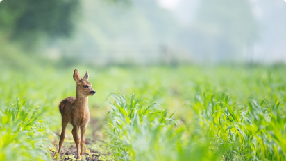
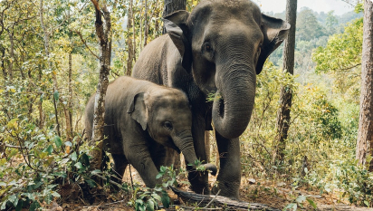
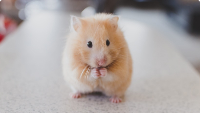

Допомога Добродіїв (442)
-
Марьян Перокопчук
10,000₴
-
Святозар Березовський
50₴
Схожi проєкти

Збір завершено
UAnimals: Порятунок затопленого притулку для
Збір завершенно:
01.12.2020
Зібрано:
80 705 ₴

80 705₴
80%
161 410 ₴
UAnimals: Порятунок затопленого притулку для
Збір триває до:
01.12.2020
Зібрано:
80 705 ₴

80 705₴
90%
161 410 ₴
UAnimals: Врятуй тварин у притулку «Уголек»
Збір триває до:
01.12.2020
Зібрано:
80 705 ₴